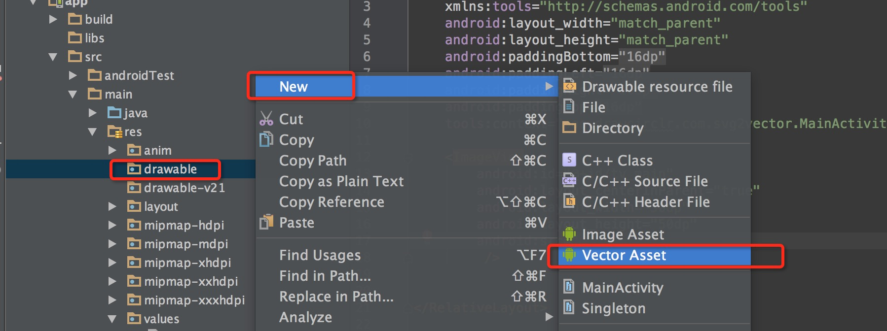
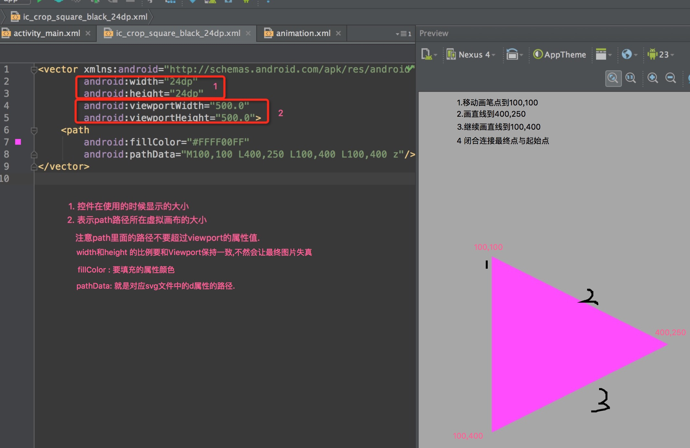

你不知道svg? 那你知道矢量图? 也不知道!? 位图呢? … 快来看一看吧
svg使用背景
- 不会再因为分辨率的原因导致图片放大失真.
- 同一个图片的不同状态不需要多张图片.
- 可以实现多平台复制,不需要每个平台都有多套的切图.
- 使用svg或者IconFont实现占用的空间更小,因为其本身就是字符串.
了解一下PNG IconFont SVG的区别
- PNG为位图,是由不同的排列和染色的像素点组成的图像,放大位图的时候能看见无数个小方块,所以位图的扩大实质是增加单个像素点的大小,故而导致在不同分辨率会必然需要多套匹配的图片.
- SVG为可缩放矢量图,它不会像位图一样因为缩放而让图片质量下降,他在不同分辨率呈现的都是一个效果.
- IconFont是WebFont形式的图标,你可以把他认为就是WebFont,该类的制作来自SVG矢量图,所以效果和上面一样.
| 图标类型 | 构成 | 优势 | 劣势 |
|---|---|---|---|
| PNG | 独立像素点 | 可以实现各种色彩及真实画面的复现 | 体积比较大,缩放和旋转容易失真 |
| SVG | 向量 | 体积较小,缩放和旋转不失真 | 制作色彩变化太多图像难度不较大 |
| IconFont | WebFont | 体积较小,缩放和旋转不失真 | 基本不支持多彩色图像,一般都是单色 |

SVG的创建使用
在项目中找到drawable –> New –> Vector Assert.
选择choose按钮可以挑选google内置的一些svg图片,确定即可.
实现SVG的动画转换
使用SVG实现动画转变,会实现一些看着很炫酷的东西.
一般实现一个svg动画需要三个文件
<vector>SVG的静态资源文件<animated-vector>指定静态SVG里面某个对应的name标签要实现的某个动画属性属性<set> -> <objectAnimator>具体要执行的动画效果.
1 svg的静态文件代码
<?xml version="1.0" encoding="utf-8"?>
<vector xmlns:android="http://schemas.android.com/apk/res/android"
android:viewportWidth="500"
android:viewportHeight="500"
android:width="100dp"
android:height="100dp">
<path android:name="play"
android:fillColor="#fff"
android:pathData="M100,100 L400,250 L100,400 L100,400 z" />
<!--
path: 添加一个唯一属性名称,如果要实现SVG的动画效果这是必须的, 会在animated-vector里面进行静态文件和动画的关联
-->
</vector>
2 关联文件 animated-vector
<?xml version="1.0" encoding="utf-8"?>
<animated-vector xmlns:android="http://schemas.android.com/apk/res/android"
android:drawable="@drawable/play_icon">
<target
android:animation="@animator/to_stop"
android:name="play" />
<!--
target标签 可以为多个,为每一个声明name属性的设置不同的效果.
在<animated-vector>中 drawable 是关联vector的静态文件路径
<target>
name: 为关联的vector里面的某个path 或者group
animation: 要执行的动画,对应一个xml资源文件根标签可以使set 也可以是objectAnimator
-->
</animated-vector>
3 动画文件
<?xml version="1.0" encoding="utf-8"?>
<objectAnimator xmlns:android="http://schemas.android.com/apk/res/android"
android:duration="2000"
android:interpolator="@android:interpolator/decelerate_cubic"
android:propertyName="pathData"
android:valueType="pathType"
android:valueFrom="M100,100 L400,250 L100,400 L100,400 L100,400 z M100,400 L100,400 L100,400 L100,400 z M100,400 L100,400 L100,400 L100,400 z"
android:valueTo="M100,100 L400,100 L400,120 L100,120 L100,100 z M100,200 L400,200 L400,220 L100,220 z M100,300 L400,300 L400,320 L100,320 z" />
注意valueFrom和valueTo 点数必须一致,不然会报错.
ok资源文件都创建ok.那么我们在layout布局中添加一个imageView标签设置一下src前景图片,直接引入上面第二部的资源文件,animated-vector.
然后在activity找到imageview控件,继续如下.
Drawable drawable = imageview.getDrawable();
if ( drawable instanceof Animatable){
((Animatable) drawable).start();
}
开始之后如下效果

SVG Path Data
主要有以下一些命令
- M： move to 移动绘制点
- L：line to 直线
- Z：close 闭合
- C：cubic bezier 三次贝塞尔曲线
- Q：quatratic bezier 二次贝塞尔曲线
- A：ellipse 圆弧
每个命令都有大小写形式，大写代表后面的参数是绝对坐标，小写表示相对坐标。参数之间用空格或逗号隔开
命令详解：
- M (x y) 移动到x,y
- L (x y) 直线连到x,y，还有简化命令H(x) 水平连接、V(y)垂直连接
- Z，没有参数，连接起点和终点
- C(x1 y1 x2 y2 x y)，控制点x1,y1 x2,y2，终点x,y
- Q(x1 y1 x y)，控制点x1,y1，终点x,y
- A(rx ry x-axis-rotation large-arc-flag sweep-flag x y)
- rx ry 椭圆半径
- x-axis-rotation x轴旋转角度
- large-arc-flag 为0时表示取小弧度，1时取大弧度
- sweep-flag 0取逆时针方向，1取顺时针方向
有个图解：